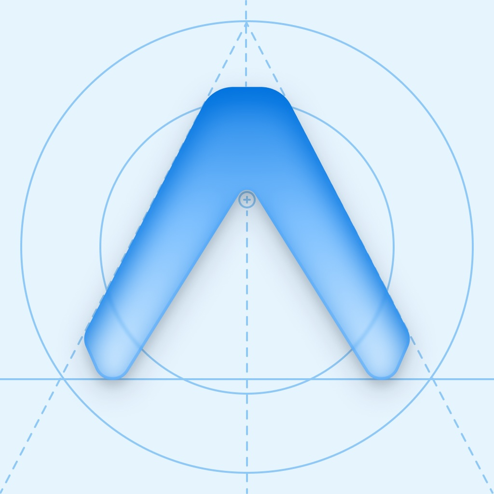

Apps fitness
não entendem prep.
Dieta. Cardio.
Treino. Físico.

Então construí
o ShapeIQ.
Today Briefing
Próxima ação do dia.
Training Session
Treino guiado.
Physique Intelligence
IA analisando meu físico.
ShapeIQ
Seu prep. Seu shape. Com IA.